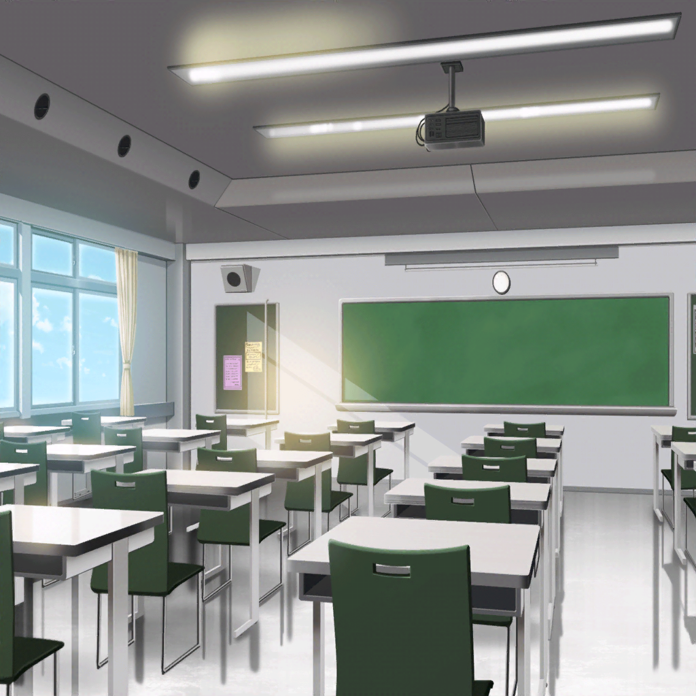

羽丘女子学園 中等部 2-B
ひまり
う〜ん……結局、蘭が授業中どこに行ってるのかも、
悩み事があるのかもわからなかったね……
巴
……そうだな。
蘭はなかなか思ってることを言わないからなあ……
つぐみ
モカちゃんは、蘭ちゃんから何か聞いてない？
モカ
んー……特に
ひまり
あーんもう！ モヤモヤする！
どうすればいいんだろ〜
つぐみ
あっ、次の授業って科学室じゃなかったっけ？
巴
やば、急がないと！
モカ
ごめん、先に行っててー。
ちょっと探しもの〜
ひまり
おっけ！ 私たちで適当にごまかしとくから、
早く来なよ〜
モカ
……さて。
探しものは見つかるかな〜

廊下
モカ
……
モカ
（A組の教室にもいない……
蘭、やっぱり授業、出てないっぽいな〜）
モカ
うーん……
……あれ？
モカ
……もくひょーを肉眼で確認。
これより尾行を開始する〜

屋上
蘭
……
モカ
らーんー？
蘭
……モカ？
蘭
え、な、なんでここにいるの？
授業中じゃ……
モカ
その言葉、そっくりそのまま蘭にお返しするよ〜
蘭
あ、あたしは、別に……！
モカ
みんな、蘭が元気ないって心配してたよ？
もちろんあたしも
モカ
クラス替えしてから、あんまり授業にも出てないらしーじゃん？
名探偵モカちゃんにはみーんなお見通しなんだけどな〜
蘭
……クラス替えは、関係ないよ
モカ
そうなの？ あたし達は蘭とクラスがわかれて
寂しかったんだけどな〜。蘭はちがう？
蘭
……さ……みしい……かも、しれない……
モカ
ん。みんないっしょだね〜
蘭
……モカは、授業出なくていいわけ？
モカ
大丈夫じゃないけどー……
ここで蘭が何してるか見てるほうがおもしろいし？
蘭
……そっか
モカ
ゆっくりしてこ〜っと。
隣、いーっすか？
蘭
……うん

通学路
ひまり
もぉーっ！ モカが授業にこないから、
フォローするのめちゃめちゃ大変だったんだからあ〜！
モカ
いやあー、すまんすまん
巴
まったく……探しものって、
最初から蘭のこと探すつもりだったんだろ？
それならそう言ってくれればいいのに
モカ
すまんてばー
つぐみ
けど、ひとまず蘭ちゃんがどうしてるかわかってよかったね
巴
まあ、な。けど、これからどうするのがいいんだろう
ひまり
前と比べたら私達、蘭と一緒の時間って減ったよね……
授業中はさすがに一緒にいられないしなあ
つぐみ
前は私たち、ずっと一緒だったもんね。
私だけもし、クラスが別になったとしても
きっとすごく寂しい気持ちになると思う
ひまり
うーん、そうだよね。
……一緒の時間をもっと作れたらなあ……
何か５人で一緒にやってみるとか？
モカ
例えば？
ひまり
う、うーん……同じ習い事はじめる、とか……？
巴
いや、小学生の頃じゃないんだから……
つぐみ
毎日絶対一緒に帰る！
ひまり
ごめん、部活ある日とかはムリかな……
巴
モカ、何かいい案ないか？
蘭も賛成してくれそうな……
モカ
うーん……みんなで一緒に授業、サボる？
ひまり
そ、それはダメ！！！
モカ
ですよねー……
ひまり
あ！ わかった！
土日は絶対一緒に遊ぶ！
モカ・巴・つぐみ
平日は……？
ひまり
あっ……
一同
はぁ〜……
ひまり
みんなで一緒にいることって、
こんなに難しいことだっけ〜……！？